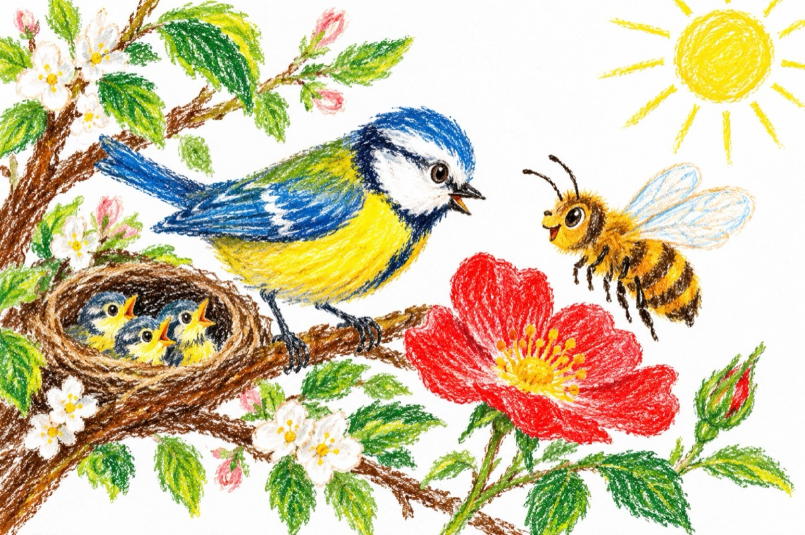

Pițigoiul și albina
Und’ te duci tu albinuță?
O întreab-un pițigoi!
Până colo-n grădiniță
Să culeg nectar din flori.
Asta face-o albinuță,
Dacă vrei tu ca să știi...!
Vino să-ți arăt ceva
În cuibarul meu cu pui!...
Nu am gând de altceva
Te-aș mânca, de vrei să știi!...
Piu, piu, piu, piu, piu, piu,
Acest cântecel ți-l știu,
Te-ai certat cu binele,
Vezi că chem albinele!...
Nu ai gusturi rele, știi?
Ia mai puneți pofta-n cui.
Și de nu mai stai cumințel,
Acul meu eu ți-l „ofer”,
Să te usture nițel!...
Vasile Groza